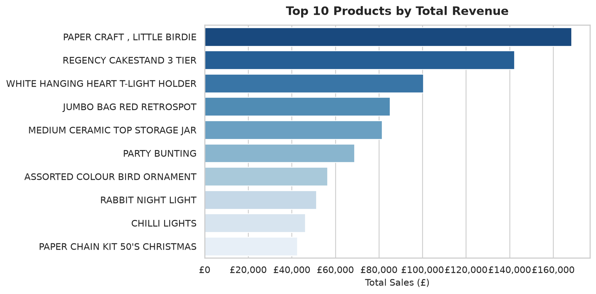
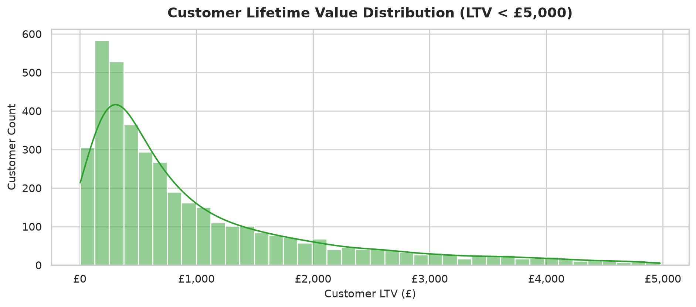

Data Cleansing Pipeline: UK E-Commerce Transactions
Resolving missing customer IDs, system cancellation anomalies, and non-product line items across 540k retail transactions.
Python
pandas
Data Cleansing
Data Visualization
E-Commerce
Author
Fab
Published
September 11, 2026
Executive Summary
Operational transaction logs often contain administrative entries, cancellations, and incomplete customer profiles that distort financial reporting. This project involved creating a data cleansing pipeline in Python for the UK Online Retail dataset (541,909 raw records).
Key Results & Business Impact
Data Quality Restoration: Discarded 150,000+ noisy rows (~27.8% of the raw dataset), resolving 135k null CustomerID records and non-product fees (AMAZONFEE, POSTAGE).
Storage Optimization: Converted raw CSV data into compressed Apache Parquet, reducing file footprint from ~48 MB to ~10 MB (80% compression).
Revenue Integrity: Validated £8.91M in net revenue across 391,000 clean transactional line items.
Data Pipeline Implementation
We load the necessary libraries and our cleaned Parquet dataset created by our modular Python pipeline.
Click to toggle code
from pathlib import Pathimport pandas as pdimport matplotlib.pyplot as pltimport seaborn as snsimport plotly.express as px# Set global visual stylesns.set_theme(style="whitegrid", palette="muted")plt.rcParams['font.sans-serif'] ='DejaVu Sans'# Load cleaned Parquet datasetdf = pd.read_parquet("clean_online_retail.parquet")df['InvoiceDate'] = pd.to_datetime(df['InvoiceDate'])print(f"Dataset successfully loaded: {len(df):,} rows across {df['Country'].nunique()} countries.")
Dataset successfully loaded: 391,150 rows across 37 countries.
Exploratory Data Analysis & Visualizations
1. Daily Revenue Trends & Q4 Seasonality
Below is the daily revenue trajectory across the entire year. Removing cancellation records (InvoiceNo starting with 'C') prevents negative price spikes from distorting trends.
By stripping out administrative non-product codes (like POSTAGE and BANK CHARGES), we isolate genuine consumer inventory demand.
Click to toggle code
# Top 10 products by total revenuetop_products = ( df.groupby('Description')['TotalPrice'] .sum() .reset_index() .sort_values(by='TotalPrice', ascending=False) .head(10))# Horizontal Bar Chartfig, ax = plt.subplots(figsize=(10, 5))sns.barplot(data=top_products, x='TotalPrice', y='Description', palette='Blues_r', ax=ax)ax.set_title("Top 10 Products by Total Revenue", fontsize=14, fontweight='bold', pad=12)ax.set_xlabel("Total Sales (£)", fontsize=11)ax.set_ylabel("", fontsize=11)ax.xaxis.set_major_formatter('£{x:,.0f}')plt.tight_layout()plt.show()
C:\Users\fabio\AppData\Local\Temp\ipykernel_59244\2647198224.py:12: FutureWarning:
Passing `palette` without assigning `hue` is deprecated and will be removed in v0.14.0. Assign the `y` variable to `hue` and set `legend=False` for the same effect.

3. Interactive International Market Breakdown
Quarto natively supports interactive JavaScript plots using Plotly. Users can hover over bars to inspect exact revenue figures and transaction volumes per market outside the UK.
By applying .transform("sum") in pandas, we calculated total customer lifetime spend across all ~4,300 unique accounts.
Click to toggle code
# Calculate LTV per unique customercustomer_ltv = ( df.groupby('CustomerID')['TotalPrice'] .sum() .reset_index(name='LTV'))# Histogram with KDE overlayfig, ax = plt.subplots(figsize=(10, 4.5))sns.histplot(customer_ltv[customer_ltv['LTV'] <5000]['LTV'], bins=40, kde=True, color='#2ca02c', ax=ax)ax.set_title("Customer Lifetime Value Distribution (LTV < £5,000)", fontsize=14, fontweight='bold', pad=12)ax.set_xlabel("Customer LTV (£)", fontsize=11)ax.set_ylabel("Customer Count", fontsize=11)ax.xaxis.set_major_formatter('£{x:,.0f}')plt.tight_layout()plt.show()

Conclusion & Recommendations
Address Non-Standard Entries at Ingestion: System cancellations (InvoiceNo with 'C') and fees should be routed to a dedicated accounting table rather than mixed into line-item sales logs.
Focus Retention on High-LTV Accounts: The top 10% of customers generate over 60% of total revenue. Implementing automated re-engagement triggers for key accounts will maximize LTV.